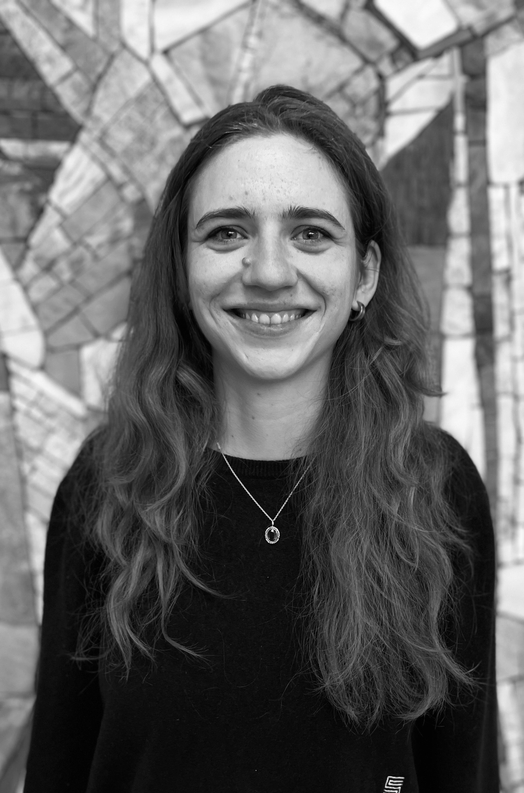

PhD student, Sociology, Humboldt University of Berlin
Welcome to my page! I am a PhD student in Sociology at the Dynamics PhD Program working on economic security along the life course with a focus on retirement. I am particularly interested in the ways in which policies produce inequalities by gender, migration, and marital status. In my PhD, I compare outcomes across Germany and the Netherlands, highlighting how different pension system features produce (dis)advantages across minority groups.
Always happy to have a chat about pension regulations or anything else ;)